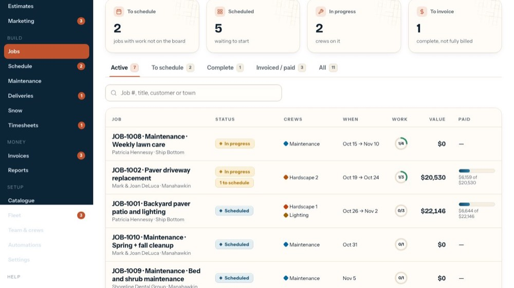
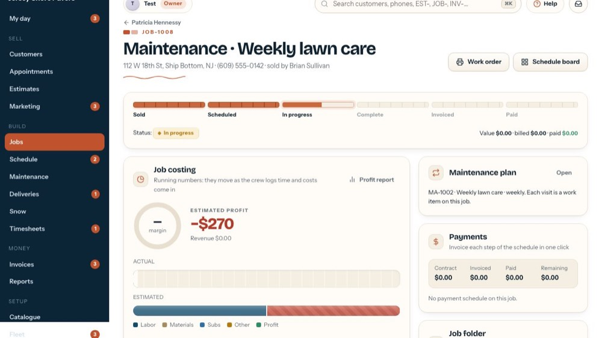
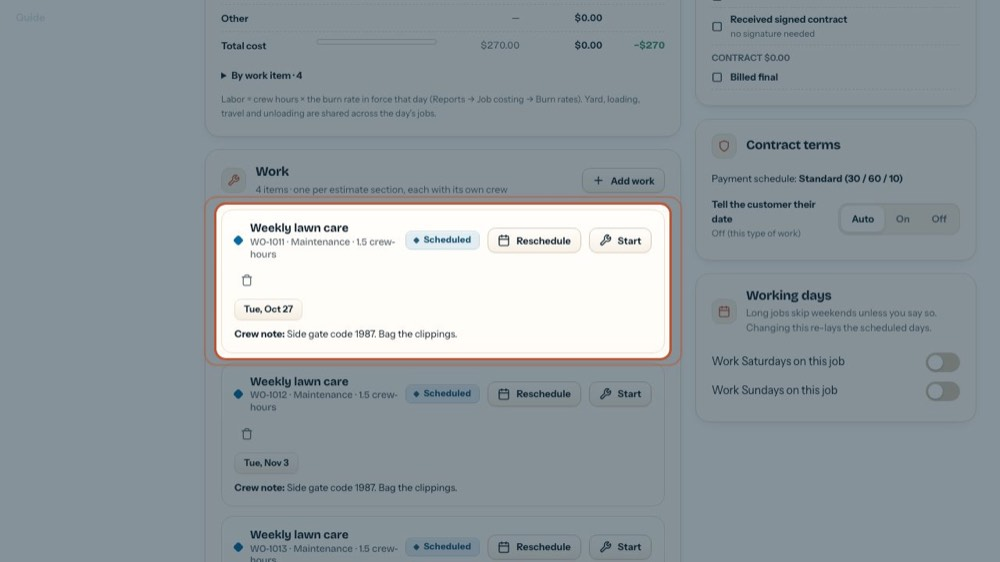
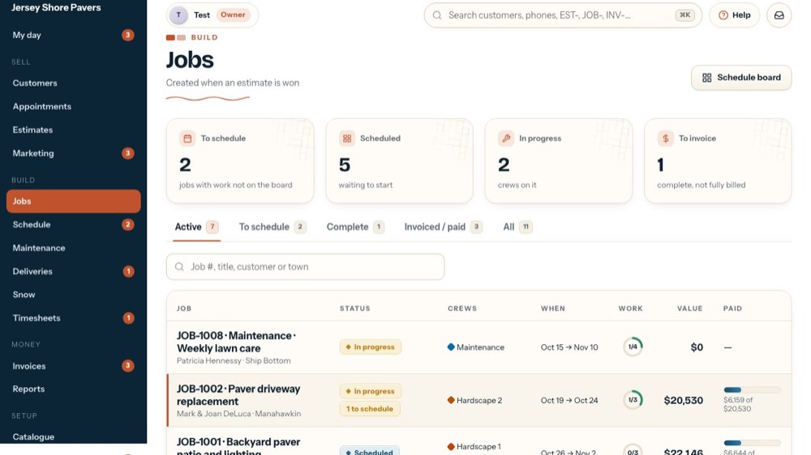
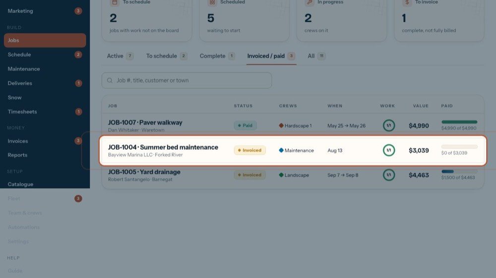
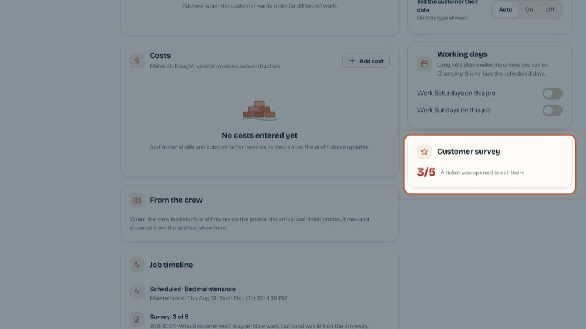
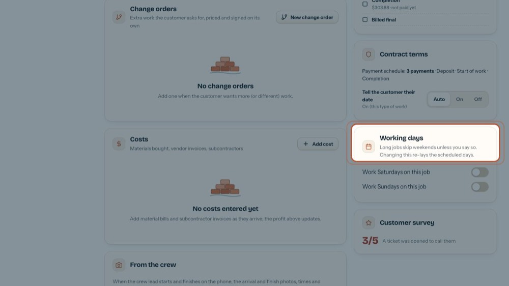

See a job's maintenance plan and survey
In the office app, press Help and type see a job's maintenance plan and survey
: the tour plays on your own screen, with your own data.
-

1Open the job
A maintenance plan keeps its visits on a job of its own. Let's open one.
-

2Maintenance plan
The plan's number, service and how often. Each visit is a work item on this job. Open goes to the Maintenance screen.
-

3One item per visit
The plan books each visit; Reschedule or Start it like any other work.
-

4Finished jobs
Now a finished job.
-

5Open the job
The survey shows once a job is done.
-

6Customer survey
After the job the customer gets a survey. Their score shows here; 3 or less opens a ticket to call them.
-

7Material selections
When the estimate has the customer's picks, a Material selections card shows above Working days: approved or not, Selection sheet and Print / PDF.